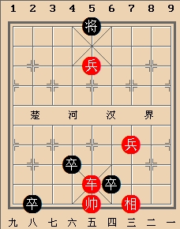
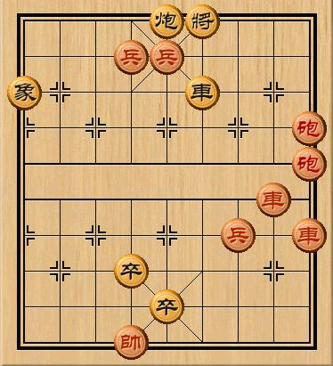
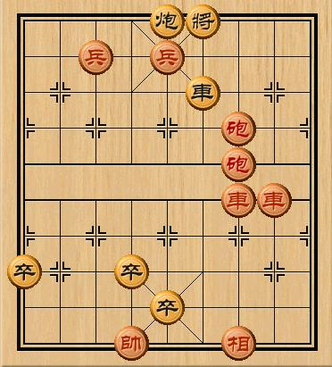

谁玩过象棋江湖残局~
首页
抱朴守静
#1 谁玩过象棋江湖残局~ 作者：小丸.net 发表时间：2010-6-27 17:16:05
在马路上碰到了个摆残局的，正好没事，看了一下局面，红先黑后，红只有一兵一车，黑有三个兵，而且重重的压在了红帅周围。仔细算了一下，兵5平4，将五平四，红车杀到底，红胜。
期间围了一大堆人，有两个胆子大的投注100，没走出来（走法都是兵5进1，将五平四。。。）那个摆残局的看到我走过去：“小伙子，要不要来试试”，我看了一分钟不到，算出了必杀，就说，我不投钱，我给你走个玩怎么样，然后我把答案告诉他，这个摆残局的家伙说：我有事~~先走，你们玩会~~

局面记了个大概
［此帖子已被 小丸.net 在 2010-6-27 17:30:19 编辑过］
#2 Re:谁玩过象棋江湖残局~ 作者：屏蔽 发表时间：2010-6-27 18:15:18
这种残局都必须连攻胜么？
#3 Re:谁玩过象棋江湖残局~ 作者：小丸.net 发表时间：2010-6-27 18:21:38
对啊，就是五子棋的VCF。。。。红黑都是唯一走法。
#4 Re:Re:谁玩过象棋江湖残局~ 作者：江南新绿 发表时间：2010-6-27 19:36:03
丸子，你的图记错了吧。
街头要玩，也要玩下面这两个才过瘾啊。


#5 Re:谁玩过象棋江湖残局~ 作者：越狱行辕 发表时间：2010-6-27 22:11:02
。。。楼主。。一定是记错了 怎么可能摆这种局。。
#6 Re:Re:谁玩过象棋江湖残局~ 作者：yoda 发表时间：2010-6-28 9:35:36
有些也是靠等着的。比如四大江湖残局之一的“蚯蚓降龙”。靠小兵渡河取胜，招法曲折。尤其是等着的运用非常精妙。
#7 Re:谁玩过象棋江湖残局~ 作者：越狱行辕 发表时间：2010-6-28 10:54:03
哇哈哈 yoda老师 连蚯蚓降龙 都知道
#8 Re:谁玩过象棋江湖残局~ 作者：老黄 发表时间：2010-6-28 11:02:56
街头残局都是骗术。有托的。边上起码三个托，特别是那种动不动就押一百那种，更是百分百骗局。
丸子大师如若不信，试试看，包你的人民币有去无回。
你兵五平四，人家卒子一下就把你的车干掉了。
江南新绿这个是街头比较常见的残局。
［此帖子已被 老黄 在 2010-6-28 11:17:27 编辑过］
#9 Re:谁玩过象棋江湖残局~ 作者：越狱行辕 发表时间：2010-6-28 11:19:34
楼上的。。象棋实力果然不一样。。。第一步竟然走兵五平四。。
#10 Re:Re:谁玩过象棋江湖残局~ 作者：yoda 发表时间：2010-6-28 11:31:34
引用：
原文由 越狱行辕 发表于 2010-6-28 10:54:03 :
哇哈哈 yoda老师 连蚯蚓降龙 都知道
我小时候有段时间经常看我一个好象棋的叔叔拆解这些江湖残局，名字都是听叔叔说的。所谓四大残局大概是七星聚会、野马操田、蚯蚓降龙和征东（征西）？变化之繁杂非不下苦功不能掌握的。有些叫不上名字的大型残局，往往都是经过几代棋手和艺人的加工，其难解可想而知了。所以，建议看到路边摆摊的还是看看吧，除非研究过，否则下场的结果除了输钱还是输钱。一般来说，摆残局的棋下的还算可以的，我有个朋友喜好象棋，碰到摆残局的经常直接付钱和对方走全局。
#11 Re:谁玩过象棋江湖残局~ 作者：我就不信注册不上 发表时间：2010-6-28 13:02:29
这个局面吓我一跳，还好后边注了一句话“局面记了个大概”
#12 Re:谁玩过象棋江湖残局~ 作者：孤竹 发表时间：2010-6-28 17:35:23
江湖残局一般都是和局结果的，你无论如何赢不了摊主的钱，丸子要小心~